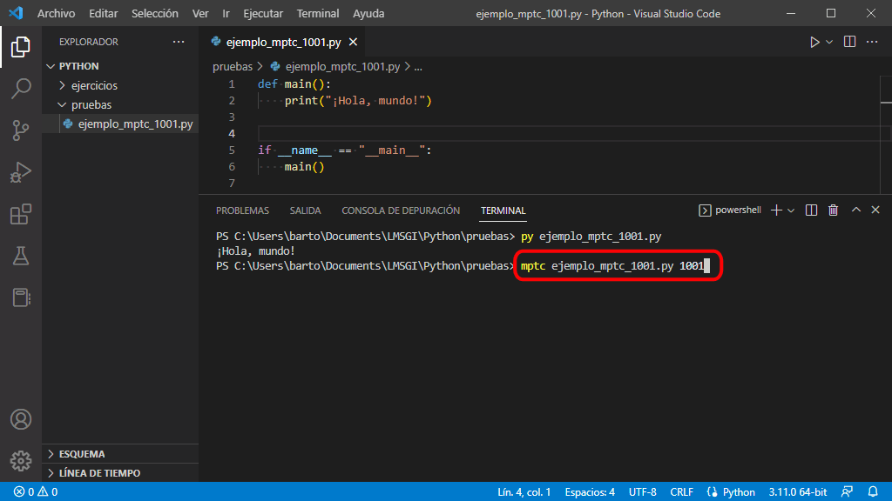

He empezado a crear Mclibre Python Testing en enero de 2019 y a lo largo del tercer trimestre del curso 2018/19 espero ir mejorando la herramienta, pero todavía tiene un carácter experimental.
Qué es Mclibre Python Testing
Mclibre Python Testing es una herramienta basada en PyTest que pretende ayudar a los alumnos a comprobar que han resuelto correctamente los ejercicios propuestos en este curso.
Un programa de servidor que genera los parámetros de pruebas para PyTest.
Un programa de cliente que solicita al servidor los parámetros de prueba para PyTest y que ejecuta PyTest con dichos parámetros y que muestra el resultado de las pruebas.
El alumno sólo necesita instalar el programa cliente. El programa cliente requiere las bibliotecas PyTest y Requests, que se deben instalar previamente, como se comenta en la lección Instalación de MPTC.
Cómo utilizar MPTC en Visual Studio Code
Los pasos para utilizar Mclibre Python Testing Client en Visual Studio Code sson los siguientes:
Elija un ejercicio que incluya el identificador MPTC del ejercicio:
Los ejercicios para los que hay disponibles tests automáticos de MPTC se pueden identificar por el cuadro situado en la parte superior derecha del enunciado, como en el ejemplo siguiente:
Ejemplo de ejercicio - 1
Escriba un programa que salude al mundo.
¡Hola, mundo!
El número del cuadro indica el identificador del ejercicio en MPTC. En el ejemplo anterior, el número sería 1000.
Escribir el programa
Escriba el programa que resuelve el ejercicio, siguiendo la plantilla de la lección Programa básico.
El programa correspondiente al ejemplo anterior podría ser el siguiente:
def main():
print("¡Hola, mundo!")
if __name__ == "__main__":
main()
Comprobar el funcionamiento del programa personalmente
Compruebe que el programa funciona correctamente ejecutando el programa y comparando el resultado con el enunciado.
Comprobar el funcionamiento del programa con MPTC
Para ello, abra una ventana de terminal en el directorio que contiene el ejercicio. para ello, haga clic derecho sobre el directorio y elija la opción "Abrir en termninal":
En el terminal, escriba la orden mptc nombre_del_programa.py identificador_mptc, donde nombre_del_programa.py es el nombre de su programa e identificador_mptc es el identificador MPTC del ejercicio:
Si todo funciona correctamente, se mostrará el resultado de las pruebas automáticas:

Problemas conocidos
Estos son algunos de los problemas que presenta MPTC.
Si el programa falla, MPTC no ejecuta los tests
Si el programa que se está probando tiene errores de sintaxis o falla en su ejecución, MPTC no puede probar el programa. El mensaje final dice que se han pasado todas las pruebas con éxito, pero no es cierto.
PS C:\Users\Barto\Documents\LMSGI Barto\Python\pruebas>mptc .\ejemplo_mptc_1000.py 1000
...
E IndentationError: unexpected indent
...
All tests have passed
Si el primer argumento no es únicamente el nombre del fichero, MPTC no ejecuta los tests
Al llamar a MPTC el primer argumento debe ser el nombre del fichero que conteine el programa. No pueden usarse ni caminos relativos ni absolutos, ni siquiera el .\ que incluye PowerShell cuando se completan los nombres de ficheros con el tabulador. El mensaje final dice que se han pasado todas las pruebas con éxito, pero no es cierto.
PS C:\Users\Barto\Documents\LMSGI Barto\Python\pruebas>mptc .\ejemplo_mptc_1000.py 1000
...
E TypeError: the 'package' argument is required to perform a relative import for .\\ejemplo_mptc_1000'
...
All tests have passed
MPTC no funciona en el instituto
Actualmente (febrero de 2019), MPTC no funciona en los centros educativos de la Generalitat Valenciana. Yo diría que es culpa del proxy de la Conselleria y estoy intentando averiguar el origen del problema.